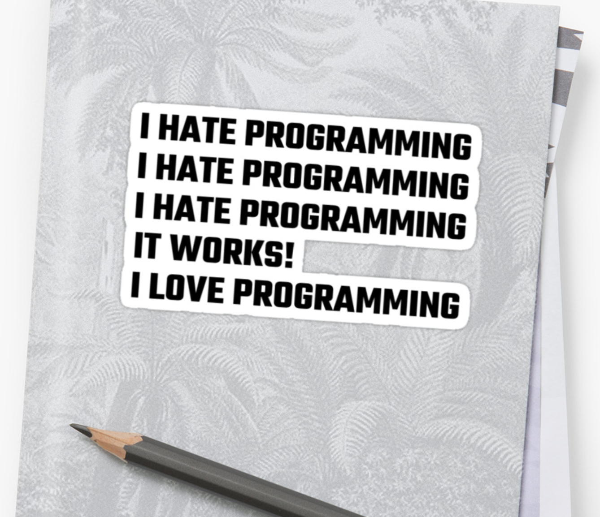

I’m really starting to like coding :)
Yay!
I love the style of lectures! Super easy to follow along, and not over an hour of boring material.
Fifteen minutes or shorter always. Sometimes much shorter.
I really enjoy the videos you make for us each week. They are well-made and fun to watch, plus they aren’t that long because they are concise and straight to the point. Thank you for providing such high-quality content for us every week! It really makes a fully asynchronous class more interesting and engaging.
Thank you for saying this. I’ve been using short videos to teach HTML for several year now. Would never go back to demos in the lab.
Class attributes were very confusing at first but much easier to understand when I actually started working with the code (like with everything!).
Learn by doing, right?
I learned that in our write ups it is extremely important to use the word “to use” instead of the pretentious word “to utilize”. Multiple groups I have been in thus far have gotten that feedback so I looked it up and learned the difference between the two terms as advised.
I wouldn’t say it’s “very important”. It’s more like a pet peeve I got from Brian Lawler. I don’t even dock points, I only give you a hard time for it.
I’m really enjoying exploring good-looking websites to find examples each week!
You’re my people.
I’m starting to get used to rotating new groups for the design principle examples. I’m still not sure if I like new groups each week.
There are pros and cons of keeping or rotating groups. I chose the latter because I don’t want anybody stuck in a group that is not working well for them.
This week I learned a lot about coding and the complexities of HTML, but I also learned that I get so much gratification out of getting work done early! I know that’s simple, but I’ve always been a procrastinator, so getting in the mindset of working on assignments days in advance has taught me that I am capable of getting over bad habits.
Good job! I too had to eventually learn that lesson. But unfortunately I did in a much older age.
Really wishing I could take this class in-person! :( I would love to be able to troubleshoot and learn with others, but thank goodness for the plethora of information on the Internet.
I know. I always enjoyed seeing students helping each other. I never answer a question if I know the student next to the one who ask it can help them just as well.
I am excited to apply the design principles I have learned so far to my hackathon project.
Please let us know how it goes!
It’s also interesting to see how one design principle can easily be confused for another as I do that a lot myself.
Not a big deal if you do. I don’t care as much about their distinction as I care about their use.
I learned that there is no actual evidence supporting that color effects our emotion and mood.
True. You’ve probably heard the wrong claim that fast‑food chains use yellow because yellow makes you hungry. Yellow just conveys inexpensive.
The highway signage always stood out to me legibility wise. I always wondered if these signs are designed to their full potential or if they can be designed better. The thing is, it can confuse many to have a total redesign for highway signs.
Very good point. The question is rarely if there’s room for improvement. There almost always is. The question is if it’s worth improving. In this case, the cost would be financial (making all the signs), but also, as you mentioned, making people confused. At every job, you can always improve it. But sometimes, you’d have to put a lot of time or money and the improvement would not be significant. That’s when you call it done. Not because you can’t improve it, but because it’s not worth it anymore.
My CPE 123 professor was always concerned about making sure our code was “readable raw,” it other words making sure that you could read the code file itself. So, I was able to take that knowledge and training and apply it to this assignment by also working on distinguishing all of the different sections and types of headlines within the code itself. Therefore, it was a lot easier for me to find and fix any changes that I saw in the output file and be able to see immediate results.
I agree with your CPE 123 professor. That’s why, for example, I insist on code organization. It’s similar to Lorraine’s file hygiene too.
I am still trying to figure out in what cases I should use the span tag.
Don’t worry about it. You may or may not ever use it.
I didn’t know spans were a thing until I took this class. There have been instances where I was needing that kind of treatment in my HTML files but didn’t know how.
Use them wisely, then.
Margins are transparent and clear an area around an element, whereas padding clears an area around the content but within the element itself.
Correct.
I found the CSS demo very helpful, especially since I was thinking it would be much more complex to include style into an HTML page.
It’s actually quite straightforward, isn’t it?
I have always used internal CSS for my old projects. But having an external CSS file is really a game-changer. Now everything is organized into one file and is extremely easy to keep track of.
And it’s much easier to change the style of all pages.
I learned how to style text using CSS, not HTML.
Yes, please. Always.
I really appreciate the short videos for each topic. There was more information to learn for CSS so it was helpful it was broken up in parts. I want to do more in terms of styling with CSS which I’m sure we’ll learn. However, I know as we learn more that I’ll be looking up what declarations to use for future assignments.
Yes, you will. Please look them up. W3 Schools and MDN are excellent resources.
Is it better to use RGB codes or hex codes for colors? Or it doesn’t matter?
It makes no difference. HEX codes are just another way to write RGB. If you write rgb(x,y,z), x will tell you the amount of red, y will tell you the amount of green, and z will tell you the amount of blue. Each one of them will vary from 0 to 255, for a total of 256 possible values for each color. If you use #xxyyzz, xx will tell you the amount of red, yy will tell you the amount of green, and zz will tell you the amount of blue. In this case, the first value in xx goes from 0 to 9, and then, when we run out of one-digit numbers, it goes from A to F, for 16 possibilities for the first x and 16 more for the second x. It turns out that 16×16=256, so we have 256 possibilities for each color as well. In both notations, there are some 16.8 million different colors we can use combining different values for red, green, and blue.
When I was coding I wanted to know why we should use unordered list since the ordered list keep the same order.
Please keep reading…
Learned how to properly utilize ordered and unordered lists in HTML. Ordered, by default, appears with a numerical marker while unordered appears as bullet points.
Exactly.
Once you declare a font-family as “serif” or “sans-serif", how can you list a more specific typeface?
Yes. We’ll get to it soon.
Also I still find using GitHub to be confusing, as I can’t rename a item at all or rearrange things.
I too find it confusing and very frustrating actually.
I didn’t think that screen readers would be mentioned in this class, but I enjoyed learning about the different types of emphasis and how they would be interpreted by screen readers versus just seeing them on a page.
Accessibility will be an important point in this class. You don’t want to make the life of a blind person harder. You’re not monsters!
https://www.freecodecamp.org/news/get-started-with-css-in-5-minutes-e0804813fc3e/ was what I sent to my friend who is also in the class for some supplemental tips.
Thanks for sharing, Natalie! Great resource. Just remember not use px for anything; use em or %. And don’t use the name of the color as value for color; use rgb(x,y,z) or #xxyyzz instead.
I actually appreciate the restriction of not providing examples from Netflix, Google, or Apple since I am discovering a lot more websites with really cool designs.
And then we all get too see them too.
Considering how much people have to look at a screen these days, EVERY site should have a dark mode. While white is clean and easy to read in the daytime, it’s really smart for websites to have the dark mode option because it’s much easier on my eyes when I’m inside and up late at night.
You know what, you’re right. I was thinking about this week, actually. I have to look into making it available on my sites. I wish Canvas had a dark mode too.
While this class may be my most challenging, I can really appreciate how rewarding the work is.
Something like this?

I’m excited for future coding projects!!
And I look forward to seeing what you all will come up with!